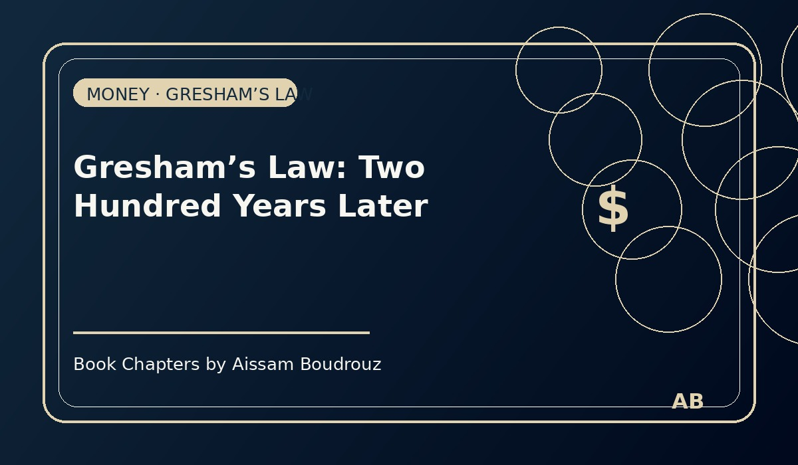

Gresham’s Law: Two Hundred Years Later
It was one of those quiet afternoons when I went out to pay a small bill at a neighborhood shop.
I had a few coins, some notes, and my bank card — the usual mix we all carry without thinking.
As I handed the money over, a strange thought crossed my mind:
“What if I tried to pay with gold instead?”
I smiled at the idea.
Gold — the eternal symbol of value — yet nobody around me had ever used it to buy anything.
Not for groceries, not for gas, not even for coffee.
So I asked myself:
Why do we all use paper, cards, and numbers on a screen — but never gold or silver anymore?
Page 1 – The simple truth behind an old law
The answer goes back more than two centuries, to something economists call Gresham’s Law.
It says:
When two forms of money circulate together, one “good” and one “bad,” the bad money drives out the good.
In plain words:
When people have two kinds of currency — one they trust more — they tend to spend the weaker one and keep the stronger one.
That’s why the “bad money” stays in the market, and the “good money” disappears into drawers, safes, and jewelry boxes.
Page 2 – The Moroccan version
You don’t need a PhD to see it in action.
Just think about what happens in every Moroccan home.
When guests come over, the mother always serves the old candy from the kitchen drawer, while the good chocolates are saved “for a special occasion.” 😄
That’s Gresham’s Law — alive and well in the living room.
The same logic applies to money.
People use the weaker currency for daily transactions, and they save the stronger one for protection.
In the past, that meant spending silver and saving gold.
Today, it means spending paper and keeping what truly holds value — gold, silver, or even digital currencies that escape government policy.
Page 3 – Paper, screens, and hidden treasures
In modern life, almost everything we use as money is what economists call fiduciary or scriptural money — paper notes, coins, and bank transfers whose value exists because we all believe in it.
Gold and silver still exist, of course, but they’ve been pushed out of circulation by the convenience of credit cards, apps, and government-issued money.
And according to Gresham, that’s exactly what should happen.
The “bad” or weaker currency — the one that can lose value through inflation or policy — becomes the everyday tool.
The “good” one — the stable store of value — gets quietly hidden away.
It’s human nature.
We keep what we trust; we spend what we must.
Page 4 – Two centuries later
More than two hundred years after Thomas Gresham first described this idea, the law still holds true.
Paper money rules our daily lives, while gold sleeps in vaults — untouched, admired, and rarely used.
Even the rise of cryptocurrencies hasn’t changed the pattern; it only gave us a new version of “good money” that people prefer to store rather than spend.
So the next time someone tells you economics is outdated, remind them:
The world may have gone digital, but Gresham’s Law still runs on time.
Just like the mother who keeps the fancy sweets hidden for the guests,
we all save the “good money” —
and spend the rest. 💰✨